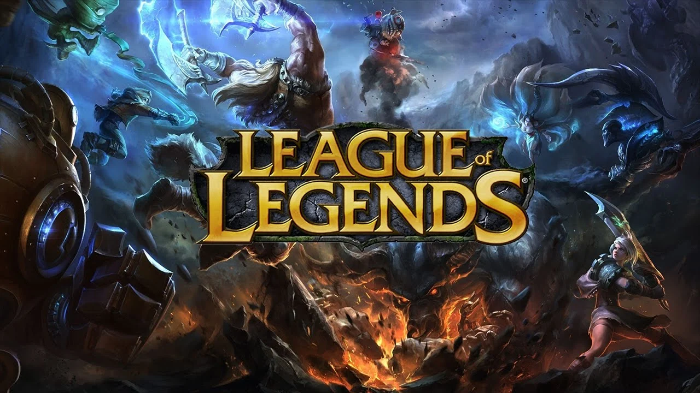

LEAGUE OF LEGENDS
League of Legends é um jogo eletrônico do gênero multiplayer online battle arena, desenvolvido e
publicado pela Riot Games para Microsoft Windows e Mac OS X. É um jogo gratuito para jogar e
inspirado no modo Defense of the Ancients de Warcraft III: The Frozen Throne.
Como funciona o League of Legends? O jogo coloca dois times de cinco jogadores um contra o outro,
com cada jogador assumindo o papel de um campeão. São mais de 140 campeões para escolher, com cada
campeão possuindo diferentes forças, fraquezas, habilidades e estatísticas.
